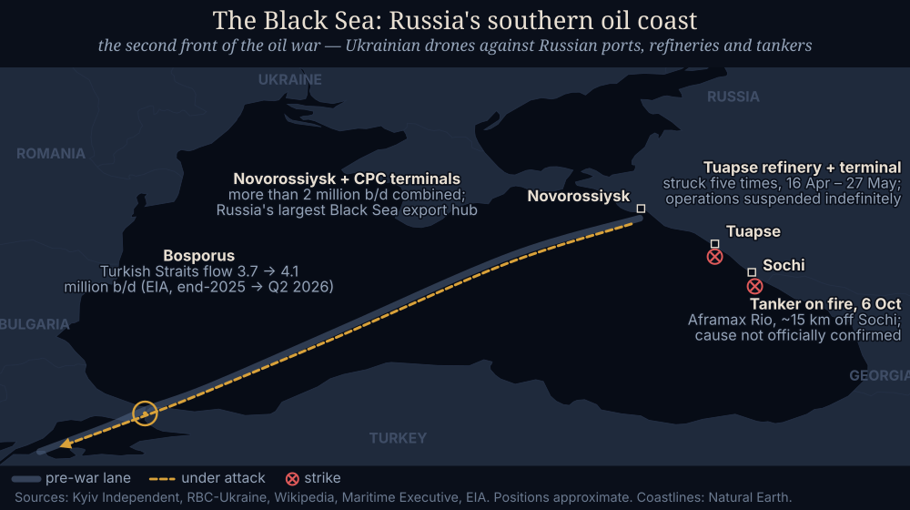
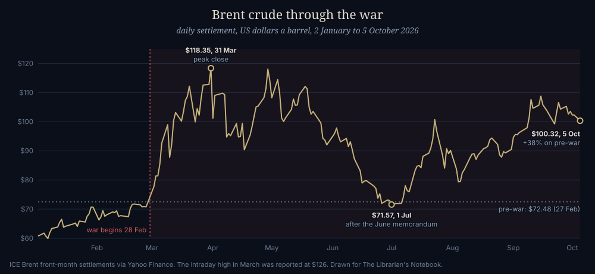

The Global Oil Crisis: Where Things Stand
THE WORLD · OCTOBER 6, 2026 · updated October 6, 2026
![World map of oil tanker routes. Wide grey lanes show the normal pre-war routes, thickest from the Persian Gulf through Hormuz and Malacca to China and Japan. Coloured lines over them show 6 October 2026: the direct Hormuz route is red and dotted, stopped for large tankers; routes through Hormuz to Asia, the Saudi pipeline to the Red Sea, Bab el-Mandeb, the Bosporus and the Baltic are amber, under attack or cut back; Suez to Europe, Russia to India, the US to Asia and Venezuela to the US are green, flowing or growing.](img/oil-crisis-world-flows.png)
This is a living page. Since September I've written eight pieces about the oil war, each a snapshot of one moment: a pipeline, a strait, a rationed box of motor oil, and on the Ledger the Fed, diesel, inventories and the futures market. Rather than stack an eighth on top, this page holds the whole picture and gets rewritten as it changes. Last updated October 6, 2026.
For seven months the headline has been "Hormuz closed." The oil has stopped waiting for it to reopen. In the last week of September, Middle East crude exports were back at or above their pre-war level on several days. They went round the strait by pipeline, or through it on small tankers with their transponders off, while somebody fired at the tankers about once a day. So oil is still near $100, the world's stockpiles are thinner than they have been in years, and the routing has never looked stranger. The map above is that routing. Everything below it explains one piece.
The briefing at a glance
Flows have recovered; prices have not. Three reasons, roughly in order of size.
![Map of the Persian Gulf, the Arabian peninsula and the Red Sea. The direct route out of the Gulf for large tankers through Hormuz is red and dotted, stopped, with strike markers in and just outside the strait. Amber dashed lines show small shuttle tankers running from Basra and Ras Tanura through the strait to a ship-to-ship transfer zone in the Gulf of Oman. A green line marks the Habshan to Fujairah pipeline, which skips the strait. A thick amber line marks the East-West pipeline across Saudi Arabia to Yanbu, with a strike marker where pumping stations were hit on 10 September. From Yanbu a green line runs north to Suez and an amber line south through Bab el-Mandeb, where the Houthis took Mokha and Perim in September and Yemen's government claims to have retaken Mokha on 5 October.](img/oil-crisis-gulf-routes.svg)

The full write-up
The graphic above is the summary. Below is the detail, with who said what.
Where things stand on October 6
The Strait of Hormuz is still shut to ordinary shipping. IMF PortWatch counted four transits on October 4, against a pre-war baseline of 85 a day, and about 195 ships were holding position on either side of the strait. Iran's parliament speaker said on October 4 that it cannot reopen until the United States meets seven conditions from the June agreement. UK Maritime Trade Operations has reported at least one attack a day since October 2, including the supertanker Kazimah III, set on fire by a projectile on October 1, and the tanker Lipsi, hit in the engine room on October 4.
And yet the oil is getting out. Kpler put the seven-day average of Middle East crude exports at 18.3 million barrels a day on September 30, and Vortexa's 14-day average was 18.6, both against roughly 18 million in the year before the war. Exports beat the pre-war level on 14 days in September. About 40% of the region's exports now avoid the strait entirely, mostly through Saudi Arabia's East–West pipeline to Yanbu on the Red Sea, where loadings went from about 1 million to 4.9 million barrels a day. Most of the rest goes through the strait on small shuttle tankers, often with their transponders switched off, which hand their cargo to large tankers in the Gulf of Oman. "The shuttle system in the Gulf is doing wonders in getting oil out, but it requires plenty of ships," as one analyst told Al Jazeera. That is also why the PortWatch count and the export figures don't contradict each other: a ship that turns its transponder off doesn't get counted.
Brent settled at $100.32 on October 5, 38% above its $72.48 close the day before the war. It has already made one round trip: up to $118.35 at the end of March, back down to $71.57 on July 1 after the June memorandum, and up again once the truce broke down a week later.
What I had wrong a month ago
On September 11, in The Escape Valve, I wrote that Gulf crude exports had fallen from about 17 to about 9 million barrels a day and that the strait was effectively closed. Both were right that week. The first is not right now. Exports recovered over September, and Hormuz turned out to be closed to normal shipping rather than to oil. I've added a note to that entry pointing here, rather than rewriting it, because it was an accurate picture of its day and the change is the story.
Why the price hasn't followed the flow
Because the flow was never the whole problem. Aramco's chief executive, Amin Nasser, said in London on October 5 that the war had cut supply from the region by "nearly three billion barrels," that more than a billion had been drawn from reserves to cushion it, and that "replenishing inventories while meeting demand could take up to two years." The IEA's own count of observed stock draws since February was 507 million barrels through August. That is a different measure (what came out of tanks the IEA can see, not what was never produced), and the Ledger entry on his speech goes through why the definitions matter. On either measure, the G7's plan to release 100 million barrels over four months is small against the hole.
The $100 is also flattering. It is the price of a Brent futures contract, oil for delivery in a month or two. A refinery that needs a cargo now buys physical crude, priced off Dated Brent, and the gap between the two is the market's own measure of how scarce oil is today. The EIA wrote in April that the physical premium had passed $25 a barrel, because "the scramble by buyers to secure volumes to replace obstructed shipments that would have come through the strait is better represented in spot market prices than in futures contracts." By mid-July, during the truce, the gap had turned slightly negative. On October 6 a Bloomberg chart shared by the analyst Karel Mercx put it back at about $31, just short of April's peak. I haven't been able to check that figure against a second source yet, so treat it as reported.
The detour also costs money. Freight is up, tankers are scarce worldwide because so many are tied up on longer voyages or in the shuttle relay, and war-risk insurance is priced for a war. Mercx also reported on October 3 that the cost of shipping a 2-million-barrel cargo from West Africa to China jumped 17.6% in a single day, to $27.22 a barrel; I could not find the freight assessment behind that number. Gulf News, relaying Reuters, said prices remain about 40% above pre-war "largely because of logistical constraints."
And it is fragile. "The flow will be sustainable unless attacks on ships, or on the pipeline, resume, something that does not seem imminent at the moment but could happen at any time," analyst Tamas Varga told Al Jazeera. Attacks on ships have, in fact, resumed.
The chokepoints, by the numbers
The EIA's August chokepoint update compares the last quarter of 2025 with the second quarter of 2026. Hormuz fell from 21.6 to 4.9 million barrels a day. The Strait of Malacca, where Gulf oil reaches China, Japan and Korea, fell from 24.9 to 16.6. Bab el-Mandeb rose from 5.4 to 8.1, which is the Saudi bypass at work: oil piped across the peninsula and shipped south out of the Red Sea. The Turkish Straits rose from 3.7 to 4.1 and Panama from 2.8 to 3.2; Suez, the Cape of Good Hope and the Danish Straits barely moved. World oil supply fell from 103.9 to 99.7 million barrels a day over the same two quarters. The September recovery is not in these numbers yet.
The Red Sea door
The bypass has a weak point at the bottom: Bab el-Mandeb, the strait between Yemen and Djibouti that Yanbu's tankers must pass to reach Asia. In early September the Houthis took the port of Mokha and Perim island in the strait itself, which I wrote about at the time (and explained at more length here). On October 5, Yemen's internationally recognized government said its forces, with round-the-clock Saudi-led air support, had retaken Mokha and the Dhubab area and secured the strait. The Houthis said they hit targets across southern Saudi Arabia in response. I'm treating the government's claim as a claim until it holds for a while; the map shows the route as contested.
The pipeline itself is also under fire. Since October 3 the Houthis have claimed ballistic-missile and drone strikes on Aramco facilities in Riyadh and at Khurais, the processing site the East–West pipeline runs through on its way to Yanbu. Reuters had a witness to a large fire near an Aramco facility in Riyadh on October 3, and satellite imagery shows smoke at Khurais on October 4 and 5, but the coalition called the Houthi claims “misleading” and the imagery shows neither the cause nor the damage; statements differ on whether pipeline flows were affected. This follows late-September Houthi claims against Yanbu (Saudi Arabia said it intercepted six missiles and saw no damage to Aramco sites) and a September wave the Saudi Energy Ministry said wounded more than 70 people and set fires at several oil facilities in the south. Tonight RT broadcast video of smoke over Jeddah, attributed to Yemeni missiles on Aramco sites; I could not confirm it. If the bypass is being hit, the Gulf export recovery on this page is less secure than the numbers suggest.
The second front: the Black Sea
Separately from the Gulf, Ukraine has for more than a year struck Russian oil infrastructure as part of its defence against Russia's invasion: refineries, export terminals, and tankers in Russia's so-called shadow fleet. Between April 16 and May 27 its drones hit the Tuapse refinery and oil terminal five times, and operations there were suspended; I have not found a report that they restarted. Novorossiysk, Russia's largest Black Sea export hub, and the neighbouring Caspian Pipeline Consortium terminal together handle more than 2 million barrels a day and have been struck before. Russia's Baltic oil port at Primorsk was hit in March and again in May, and Ust-Luga has been targeted too.
On October 6 a tanker caught fire about 15 km off Sochi. It has been identified as the Liberia-flagged Aframax Rio, which Ukraine added to its sanctions list of shadow-fleet vessels on February 12. Video shows a large fire spreading across the water around the ship. Russian channels suggest an uncrewed boat or drone; as of this writing neither government has said what caused it, and nothing has been reported about the crew. The post that brought it to my attention said flatly that Ukraine struck it. That may turn out to be right, but it isn't established yet.
The Black Sea matters to the global picture less for its volume than for its direction. Russia has been one of the war's beneficiaries, selling record volumes to India while Gulf barrels were stuck, and the Turkish Straits carried more oil in the second quarter than before the war. Strikes on Russia's export coast are the one pressure on that route.
Downstream
A crude shortage reaches people as a fuel shortage, and this one has reached them as diesel. The IEA's September report cut its 2026 demand forecast to a fall of 2.5 million barrels a day, with the losses concentrated in middle distillates and petrochemical feedstocks, especially in Asia; it expects total supply to shrink by 5.7 million barrels a day this year. In the US, Politico reported on September 23 that the White House was preparing a 90-day diesel export ban; the Ledger looked at why that would also have cut gasoline supply. The White House has since denied a ban is coming, and none has been signed. The US inflation reading published on September 11 was 3.4%, but 2.4% without energy, and that week Costco began rationing motor oil for the first time. Oil is not the only cargo: about a fifth of the world's LNG and up to 30% of traded fertilizer normally pass through Hormuz. LNG cargoes leaving the strait rose in September to their highest since February.
The winter bill is the newest place it shows up. In its Winter Fuels Outlook, published October 6, the EIA expects households that heat with oil to spend 21% more this winter than last, the largest increase of any heating fuel, because crude and distillate prices are higher. Natural gas and propane households are forecast to pay less. Oil heat is a small slice of the country (about 3% of households, mostly in the Northeast), but the cause is the same one behind the diesel squeeze: global refining of distillate has dropped, which raises the cost of imports and pulls US exports up, and US distillate stocks are low heading into winter. The EIA notes that a warmer Northeast forecast offsets part of the price increase, and that a strong El Niño could move temperatures well away from its assumptions.
Maine, the state most dependent on oil heat, shows what that looks like at the pump. Bloomberg reported on October 6 that heating oil there recently hit a record and now averages $5.96 a gallon, up about 80% from a year ago, which works out to roughly $1,500 to fill a standard residential tank that most homes will need to refill a few times before spring. That is a price per gallon in one state, not the EIA's national bill forecast, so the two numbers measure different things and are not directly comparable.
Where I could be wrong
Ship-tracking is the weak instrument here. The EIA itself warns that transponder data for Hormuz has been "especially unreliable" since February, and the export recovery depends on ships that turn theirs off; Kpler and Vortexa model around that, but they are estimates. The "40% avoid the strait" figure is Al Jazeera's summary and I could not trace its original source. Strike locations on the maps are approximate, and the status colours are my reading. The Bab el-Mandeb claim and the Sochi fire are both less than two days old. If either changes, this page will.
Update log
- October 6, 11 pm. Added the Houthi strikes on Aramco sites in Riyadh and Khurais (Oct 3–5) as a timeline event, a paragraph in the Red Sea section, and an unconfirmed claim-check row for tonight's RT Jeddah video.
- October 6, late night. Added an unconfirmed claim-check row: a video of a Venezuelan refinery fire (RTVisual on X). Not yet reported by any outlet I could find.
- October 6, night. Added Maine heating oil: $5.96 a gallon, about 80% above last year (Bloomberg, via a Joe Weisenthal post).
- October 6, evening. Added the EIA Winter Fuels Outlook: heating-oil bills forecast up 21% this winter, the largest increase of any heating fuel.
- October 6, later. Added the physical-versus-futures price gap (about $31 a barrel, reported) and the West Africa–China freight claim (single source).
- October 6. Page created, with the world flow map, the Gulf and Black Sea zooms, EIA chokepoint figures, the Brent chart, and the Sochi tanker fire (cause unconfirmed). Supersedes the "17 to 9 million barrels a day" figure in The Escape Valve, which described mid-September.

Sources
- Al Jazeera. Houthis claim strike on Saudi energy facility as Yemen fighting intensifies. 4 October 2026. aljazeera.com
- Misbar. Misbar documents smoke near Khurais following Houthi attack on Aramco facility. 6 October 2026. misbar.com
- Türkiye Today. Smoke reported over Riyadh after alleged Houthi strike on Aramco refinery (citing Reuters). October 2026. turkiyetoday.com
- Bloomberg. Midterms 2026: Susan Collins, Troy Jackson clash over costs in Maine race. 6 October 2026. Read through Joe Weisenthal (@TheStalwart), post on X, 6 October 2026, which quotes the heating-oil passage. x.com
- U.S. Energy Information Administration. Winter Fuels Outlook 2026–27 (October Short-Term Energy Outlook). 6 October 2026. eia.gov
- U.S. Energy Information Administration. Energy security: world oil transit chokepoints, 2Q26 update. 12 August 2026. eia.gov
- U.S. Energy Information Administration. Amid regional conflict, the Strait of Hormuz remains critical oil chokepoint. 16 June 2025. eia.gov
- straits.live. Strait of Hormuz Status: October 6, 2026 (IMF PortWatch transits, UKMTO incidents, the Financial Times crew-pay report). straits.live
- Iran International, relaying Reuters. Middle East crude exports exceed pre-war levels despite tanker attacks. 5 October 2026. iranintl.com
- NBC News. Tanker attacks are escalating in the Strait of Hormuz, even as oil exports rise. October 2026. nbcnews.com
- Al Jazeera. Hormuz ship attacks surge: Are increased oil exports sustainable? 6 October 2026. aljazeera.com
- Gulf News. Oil prices fall: Brent settles at $100.32 as markets weigh higher Gulf exports, G7 supply boost. 6 October 2026. gulfnews.com
- Wikipedia. 2026 Strait of Hormuz crisis (timeline). Accessed 6 October 2026. wikipedia.org
- The Irish Times. Saudi Aramco boss warns world's oil stockpiles are 'scarily thin'. 5 October 2026. irishtimes.com
- Argus Media. IEA sees big oil demand fall but still 2026 deficit. September 2026. argusmedia.com
- The National. Yemeni forces claim control of Bab Al Mandeb strait and Mokha in major offensive against Houthis. 5 October 2026. thenationalnews.com
- Bloomberg. Yemen Forces Recapture Mocha From Houthis, Eye Bab el-Mandeb Control. 5 October 2026. bloomberg.com
- Al Jazeera. Houthis control key shipping route after gains along Yemen's Red Sea coast. 11 September 2026. aljazeera.com
- The Kyiv Independent. Shadow fleet tanker reportedly ablaze near Russian port city Sochi. 6 October 2026. kyivindependent.com
- RBC-Ukraine. Massive fire breaks out on tanker off Sochi coast in Russia. 6 October 2026. newsukraine.rbc.ua
- The Hormuz Letter (@HormuzLetter). Post on X, 6 October 2026. Cited only as the source of the "Ukraine struck" claim. x.com
- Wikipedia. 2026 Tuapse oil terminal attack. Accessed 6 October 2026. wikipedia.org
- The Maritime Executive. Ukraine Strikes Russian Targets in Multiple Black Sea Ports (Novorossiysk and CPC terminal volumes, citing Bloomberg). 24 September 2025. maritime-executive.com
- U.S. Energy Information Administration. Brent crude oil spot prices surge past futures price in April. 24 April 2026. eia.gov
- Karel Mercx (@KarelMercx). Post on X with a Bloomberg chart of the Dated Brent–futures spread, 6 October 2026. x.com
- Karel Mercx (@KarelMercx). Post on X on West Africa–China freight, 3 October 2026. Cited only as the source of that claim. x.com
- The Hill. White House denies planned 90-day diesel export ban. September 2026. thehill.com
- Brent crude front-month settlements (ICE, ticker BZ=F), via Yahoo Finance, 2 January to 5 October 2026.
- Maps: coastlines from Natural Earth (public domain); routes, statuses and drawing for this page.